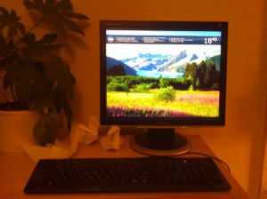
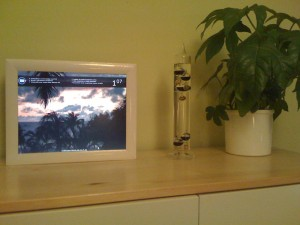

Help, I want to change Wikipedia!
Wikipedia has a problem. The number of active volunteers has been slowly decreasing for a couple of years. There are several reasons for this, and one of them is that it has become more difficult to edit Wikipedia. When you click the “Edit” button on some page, one expects to see an interface like Microsoft Word or Google Docs. Exactly the same appearance as when viewing the page, only now with a cursor and controls to edit the text and insert links and media. However, the opposite is true: you see a huge text box containing something that looks like a programming language.
{kind=link}
Analog highlights of 2010
When I started blogging, I was afraid this would happen: that I would stop after a few posts. I try to only blog when I’d like to present something. However, the moment has come to write again: this time I’d like to show you some photographs taken with a Canon A-1, an old analog camera.
{kind=link}
Simple home automation system
Last time I talked about my photoframe and room control setup. It was a laptop modification, and some hacking around in cheap remote controlled switches and simple scripts. I rebuilt most of the system now: a silent PC with normal screen serves the photos, it can control the lights and devices using a commercial product, there are cameras in the room and on the street, it’s all being shown and controlled by a slick webinterface, and my grandparents are quite happy with my old photoframe in their living room. :-)

Photoframe(d)
In 2007 I decided it would be cool to build a digital photo frame, out of a broken laptop. I bought the laptop from a friend of mine, as it was pretty old and useless, considering the keyboard didn’t work. With some help of my grandpa and his tools, I built it. Later, I added speech recognition and control of the lights in my room.
Most of the original source code is lost, and the system doesn’t work well anymore, so I’m redesigning it. In a few months you can expect another blog post on this, but I thought a writeup of the old design would be nice.
